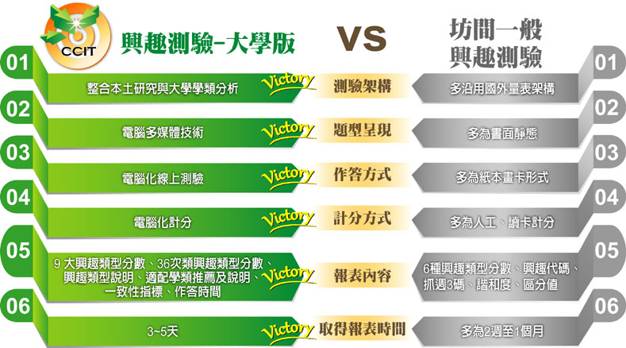

-
- 什麼是電腦化生涯興趣測驗？
- 興趣測驗（Interest Test）是用來瞭解個人自我興趣喜好的一種工具，可協助學生進行自我探索或生涯抉擇，是常見的心理測驗。 然而，現有興趣測驗多為沿用國外理論架構，缺少本本性理論的建立，施測方式多為紙本，計分形式則需透過讀卡或人工，題型、作答方式與內容也多年未加以更新或擴充，而使測驗效度有所限制。 因此「電腦化生涯興趣測驗—大學版」結合資訊技術與新式計量技術，更細緻與精確的測量學生興趣喜好。 透過本測驗結果，可使大學階段學生瞭解自我偏好的興趣類型內涵，將有助於學生探索自我與作為生涯規劃的參考依據之一，也可提供教師與家長進行生涯輔導時的參考資訊。

-
- 本測驗的特色與優勢
- 一、興趣類型細緻化
本測驗架構參考本土相關研究結果與大學學門學類之分析，將興趣類型分為9大類與36次類，讓學生能更精確地區分自己喜好的興趣類型。
二、自我瞭解與學類推薦整合
測驗結果除呈現各興趣類型分數，可讓學生增進自我瞭解之外，還提供適配學類推薦與職業參考，協助想轉系、選修輔系、雙主修的學生進行生涯抉擇。
三、電腦化施測
利用資訊科技讓施測過程、計分過程更便利與迅速，可節省相當的時間與人力成本。
四、新式計量技術
結合自比式與李克特式的優點，強化作答時的區辨力，可增加測驗的信度與效度，加強測驗結果的精確性。
五、快速取得測驗報表
透過測驗計分系統的運算，學生能在最短的時間內得到測驗結果，學校教師可於線上系統下載與印製測驗結果報表，縮短作業時間。
-
- 信度與效度
- 一、信度研究
本測驗以民國105年至106年就讀大學一至四年級的大學學生作為樣本，取樣自台灣北、中、南區的學校，共計629人的測驗結果進行分析。 內部一致性信度的部分，36種興趣次類型的Cronbach’s alpha係數介於 .69 ~ .92，9大興趣類型的Cronbach’s alpha係數介 .82~ .95。 本測驗更進一步採用更為嚴謹的驗證性因素分析，36種興趣次類型的建構信度介於 .63 ~ .93，9大興趣類型的建構信度介於 .81 ~ .97。 綜上所述，本測驗具有良好的試題品質，能夠提供穩定一致的測量。
二、效度研究
本測驗以民國105年至106年就讀大學一至四年級的大學學生作為樣本，取樣自台灣北、中、南區的學校，共計629人的測驗結果進行分析。 驗證性因素分析的結果顯示，36種興趣次類型的聚歛效度介於 .34 ~ .77，而9大興趣類型的聚斂效度介於 .32 ~ .83。 綜上所述，本測驗具備良好的測量效度，能夠提供有效的測量。
-
- 研發與製作
- 版權所有人：宋曜廷教授
由國立臺灣師範大學心理與教育測驗研究發展中心及數位學習研究室共同開發。